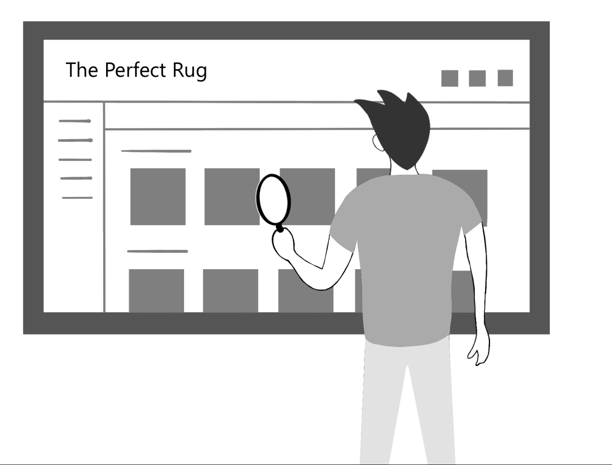
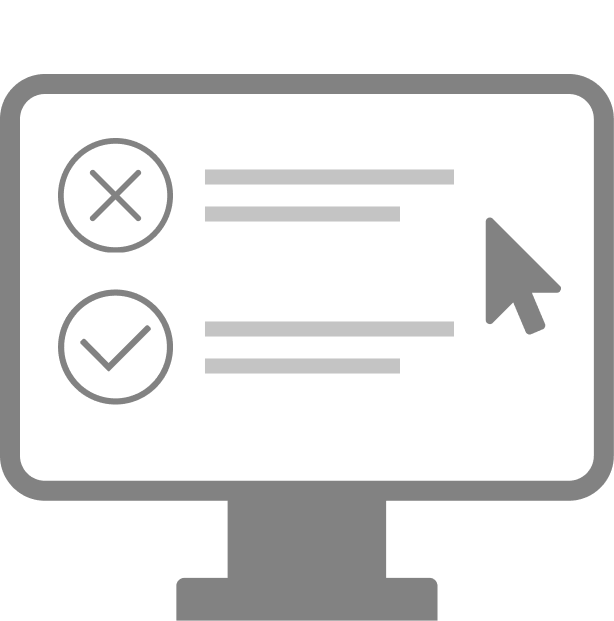

- Date: May 2021 - Feb 2022
- Role: UI/UX Designer
- Work Setting: Freelance
I was hired by OptimalWork to help take their web application to the next level. During the process, I conducted research, created wireframes, validated concepts, and delivered a final polished design. hroughout my work, I was able to learn about their target audience and empathize with their needs. I was able to redesign the existing product, with the focus of achieving streamlined interaction flows, stronger brand identity, and better focus on the community aspects of the platform.
My starting point was the existing live product. The goal of the platform is to help people work in a way that is more mindful and fulfilling. OptimalWork aims to apply psychological theories in a way that better connects working with higher meaning and goals. On first impression, the existing product appeared raw and somewhat clunky, and was not communicating its purpose clearly.
{kind=link}
{kind=link}
{kind=link}
{kind=link}
In order to get myself familiarized with the existing system, and to identify some potential problematic areas, I conducted a UX Audit. During that activity, I went through all the main screens of the product, and analyzed how well they fared in areas, such as interaction design, accessibility, clarity, branding, and information architecture, among others.
What I learned was that even though the product looked unpolished and needed updates, it actually featured a lot of userful functionality and a strong underlying potential. The platform featured a combination of learning, various practice tools, as well as self assessment functionality that all work together to help one work in a more mindful way and be more productive.

The UX Audit helped me generate ideas about areas of concern, as well as ones with potential. I also talked with the team and understood where their areas of current focus are. The two data sources helped me create a research plan, that I then used during my initial research interviews. I interviewed 5 participants in a semi-structured exploratory study that aimed at understanding the following:
- What made them use the product.
- What goals they had with using the product, and how well thoese were being met.
- What their current needs and pain points were.
- What aspects of the product they liked and used often.
The interview helped me learn about the users of the product and empathize with them better. I would later use this data to identify problem areas and brainstorm potential solutions.

Based on my user resarch, I was able to construct target user personas. Notable characteristc differences were visible between students and working professionals. The type of profession also played a role during my research, which also affected the use of mobiel vs desktop devices.
{kind=link}
Next, I worked on fireframes that would address the pain points that I identified during my research. I had to go through several revisions and scope adjustments to my prototypes, based on feedback and brainstorming sessions with the team.
{kind=link}
Once we felt that the wireframes were polished enough, I conducted a concept validation, which aimed to test the new designs and see how well they are received by customers.

After my concept validation, I made some updates and started looking at the high-fidelity prototypes. As part of that effort, I refresh the product's visual language. I collaborated with our marketing team on this, as we wanted to make sure that our marketing materials are also in tune with our newly designed product.
Finally, I created high-fidelity designs that aimed to meet the needs of the customers of OptimalWork. The designed aimed to simplify the interactions, while also introducing new features that would boost the ccommunity aspect of the platform. The final design also featured the updated brand guidelines that I developed, and include a number of new elements that made the product more polished and professional.
With mindfulness at its core, I focused on making the product more human. To do that, I worked to make the lines smoother, introducted aesthetially appealing imagery, and aimed to reduce friction.
{kind=link}
{kind=link}
{kind=link}
{kind=link}